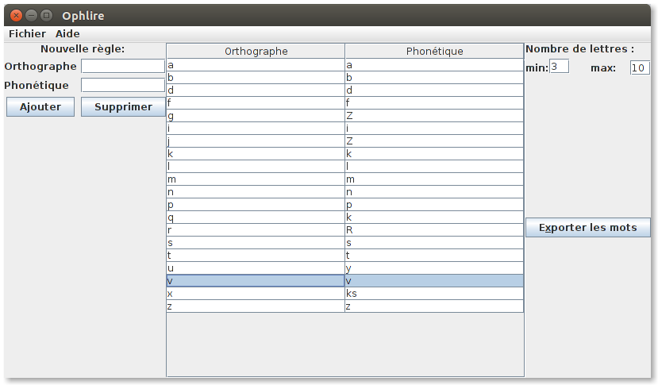

Ophlire-java
Recherche de mots du lexique français par les phonèmes qu'ils contiennent et leur réalisation orthographique.
Objectif
Générer des listes de mots qui dont la pronociation répond à certaines règles.
Cela permet par exemple d'obtenir des listes de mots qui
- «s'écrivent comme ils se prononcent»,
- se terminent par un e muet,
- contiennent un o ouvert,
- contiennent la diphtongue «an»,
- ... et bien d'autres choses.
Captures d'écran

Instructions d’utilisation
Tout d'abord, téléchargez le dictionnaire et une base de données de vocabulaire.
Chargement de la base de données
Une fois dans le logiciel, allez dans Ficher > Ouvrir et
ouvrez la base de données de vocabulaire et de règles précédemment téléchargée.
Les règles de prononciation de la base apparaissent dans la fenêtre principale.
Ajout de règles
Une règle de prononciation telle que comprise par le logiciel est la correspondance entre un orthographe (une suite de lettres) et une prononciation (une suite de phonèmes).
Pour rentrer un orthographe, on rentre la plupart du temps simplement une suite de lettres. On
peut aussi exprimer des règles plus complexes à l'aide d'expressions régulières. Pour cela,
rentrez dans le champ 'Orthographe' une expression régulière entourée de deux
caractères /. Par exemple, pour créer une règle correspondant à
un e muet en fin de mot, tapez /e$/.
Pour noter la phonétique, le logiciel n'utilise pas l'alphabet phonétique
international, mais la convention du projet lexique.org.
Pour trouver le code correspondant à un phonème, dans le menu du logiciel, choisissez
Aide > Codes phonémiques.
On peut définir plusieurs règles correspondant au même orthographe.
Si deux règles sont en conflit, la première dans la liste
sera utilisée. Par exemple, vous pouvez sans problème définir une règle avec
comme orthographe s et comme phonétique s et une autre
règle avec le même orthographe, et la phonétique z.
Génération de listes de vocabulaire
Le logiciel permet de générer des listes de mots qui correspondent aux règles définies à l'étape précédente. Un mot ne sera jamais exporté si le logiciel n'arrive pas à le prononcer à l'aide des règles que vous avez définies.
Le logiciel exporte tous les mots dont la prononciation utilise les règles sélectionnées
Sélectionnez à l'aide de la souris les règles de prononciation à utiliser dans les mots exporter. Vous pouvez sélectionner plusieurs règles en appuyant sur ctrl en en cliquant sur les règles les unes après les autres.
Cliquez sur Exporter les mots, choisissez le nom du fichier (.txt) qui contiendra la liste, et validez.
Téléchargements
Pour utiliser Ophlire, vous aurez besoin du logiciel lui-même, et d'une base de données qui contient le vocabulaire et les règles de prononciation. Vous pouvez télécharger ci-dessous une base de données qui contient l’ensemble des mots français référencés par lexique.org, et certaines règles de prononciations basiques du français.
- ophlire.jar: le logiciel
- dico.db: la base de données
Contexte
Aide à l'apprentissage de la lecture du français dans le cadre de cours d'alphabétisations.